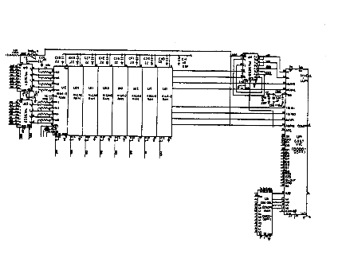

![[Prev]](../../../../images/blue_prev.gif)
![[Next]](../../../../images/blue_next.gif)
![[Contents]](../../../../images/blue_toc.gif)
![[Commodore]](../../../../images/blue_cbm.gif)
![[New]](../../../../images/blue_new.gif)
![[Search]](../../../../images/blue_search.gif)
![[Home]](../../../../images/blue_home.gif)
C64 CIRCUIT THEORY

RAM Control Logic.
U13 and U25 are multiplexers. The address output from the microprocessor are passed to RAM via
U13 and U25 when the output Address Enable Control (AEC) from the VIC IC is "high". When AEC
is "low" the VIC IC outputs refresh addresses on pins 24 - 31. AEC goes "low" when the system
clock, phase 2, is "low". Since all I/O decoding occurs when phase 2 is "high", refresh is transparent
to the processor.
Eight 4164 DRAMS provide 64k bytes of memory. One 2114 RAM (U6) provides 512 bytes of memory
allocated for screen color data storage.